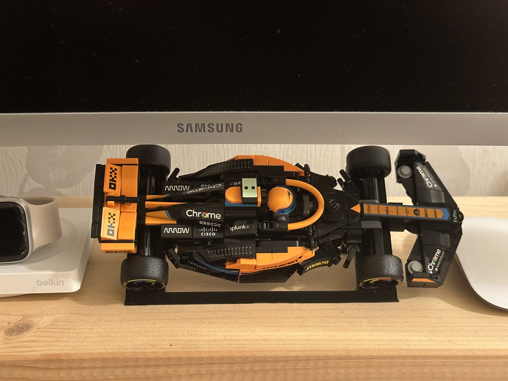
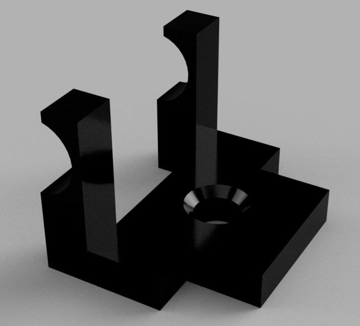
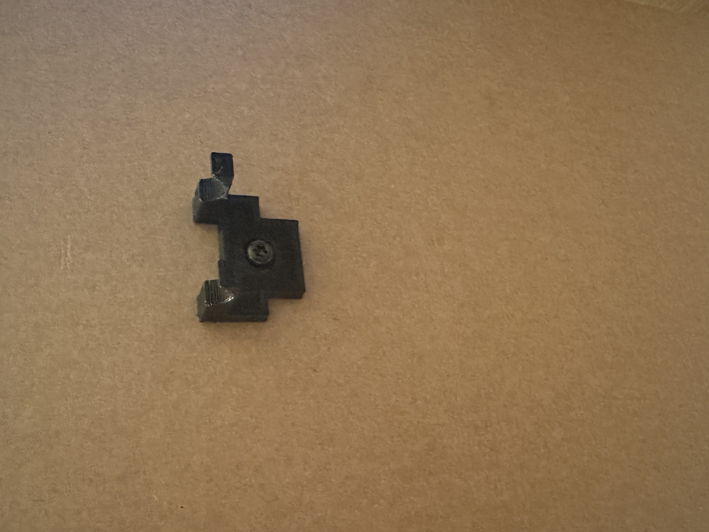
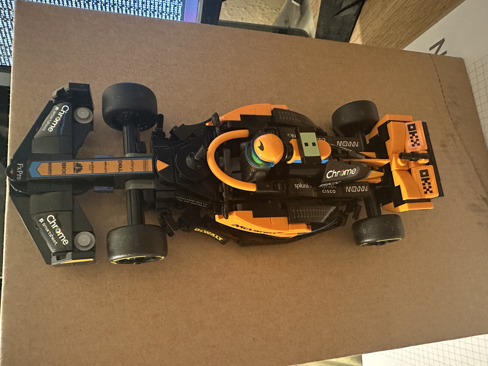

For those that know me personally, it won’t come as much of a shock that I’ve never been a huge supporter of any sport, although I enjoy taking part in most, I’ve not really taken the leap into watching or competitively supporting any sport or teams, even e-sports for games I play regularly never appealed. Apologies, I know this might sound like a ramble but I’m getting there.
Recently, however, after being subjected to two rounds of “Re-Education” this year at Silverstone and Qatar respectively, F1 has turned into weekly a nail-biting regime somehow hoping that my support can influence the McLaren car (Or even better Bottas) to go just that millisecond faster.
Alongside this new found addiction, like many people nowadays, especially those that found their way into the engineering world, I grew up loving Lego and all of the cool things you could build with it, many of which became sentimental to me. As you can imagine, once I found out Lego now create F1 cars I had to buy one, especially as it was my partners upcoming birthday who is also currently a McLaren fangirl. Although I’d love the huge model version, I’m not quite dedicated enough to splash £200 on a piece of plastic no matter how cool it looks and instead landed on the ~£22 model .
Once the model had been acquired, gifted and built it brought back the memories of the pain, where does it go now? Thankfully I’ve been practicing my 3D design and printing skills recently and wanted to put them to use. First of all I found a model online that seemed to do the trick, create a nice angle to display the Lego piece on a desk with no risk of it driving off the end.

Although that works fine I have a vision that this would look awesome hanging on the wall, making it look like we’re watching a top down view of the car racing along just like you see on TV. After a quick search I found nothing of the sorts, which is a great excuse to get into Fusion and start modelling, a simple hanging style measured exactly to line up with the Lego pieces so you will only be able to see the arms holding it up, with a single screw hole for easy mounting onto the wall or if you’re feeling brave (or reckless) with your model just a bit of glue. And this is what I landed on. 
After a few iterations to tweak dimensions so that it fits perfectly to the model and can be slid onto and off of the wheel rod without them needing to be removed I managed to print something I was happy with that worked well. My only concern was the thinest part of the arms but after a good few uses and weight testing I was happy with how it worked, any thicker and it would be to difficult to attach or not give a large enough section of circle to keep the car attached, both of which are worse cases than needing to re-print the model if it ever broke. In the photo below however I know it looks a little scraggly (Although you’ll not see it in operation so not too much of a concern) but trust me this is purely down to my horrendously calibrated Ender 3. Overall I’m fairly happy with the design, now I only need is a wall to hang it on…

 For those interested in the design I have added it onto printables to download and print, I’d be really happy to see anyone using this model so please drop a make photo if you do! Printables